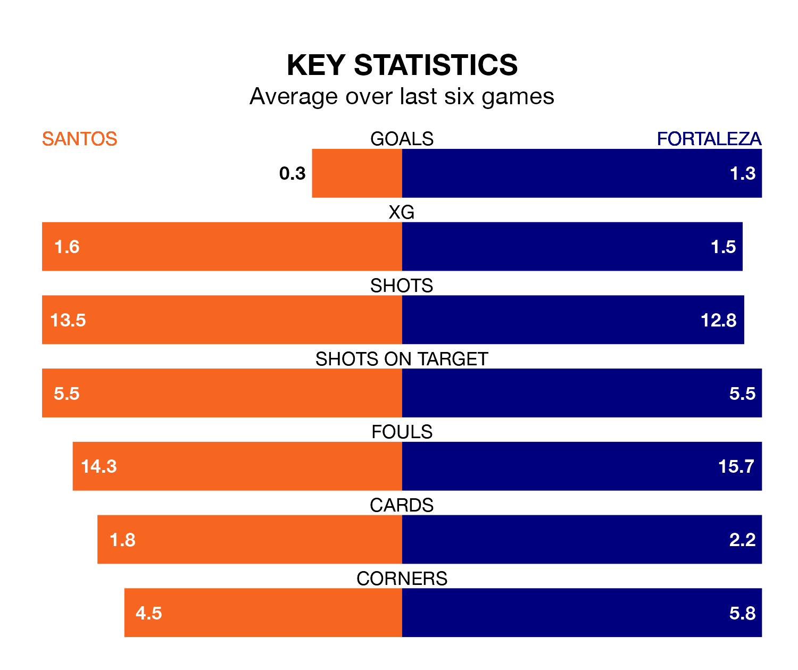

Fortaleza travel to Santos on early Thursday in Serie A.
The visitors come into the game on the back of a win in their last match, having beaten Goiás 1-0 at home, with a goal from Guilherme.
Santos, meanwhile, lost their last match, 3-0 against Atlético PR.
With 38 goals in 37 games so far this season, Santos are scoring at below the league average rate with 1.0 goals per game. And they are conceding more than average, letting in 62 goals at a rate of 1.7 per game.
Fortaleza, meanwhile, are average scorers, with 1.2 goals per game. They have also conceded 1.2 goals per game.
In Marcos Leonardo Santos Almeida, the home team have one of the league's most on-form strikers so far this season. He has notched 13 goals in 30 appearances, to sit fifth in the scoring charts.
His goal rate of one every 191 minutes is quicker than that of Juan Martín Lucero, the visitors' top scorer with a goal every 248 minutes, and a total of eight goals in 30 games.
Santos are 15th in the table after 37 games, of which they have won 11 and drawn 10, earning 43 points.
Fortaleza are five places ahead of Santos in 10th, with 14 wins and nine draws putting them on 51 points.
The hosts are in disappointing form in Serie A, with one win and three draws from their last six games.
With two wins and two draws over that period, Fortaleza's form is slightly better – they have taken eight points from 18, compared to Santos' six.
In the last three years, Santos and Fortaleza have played each other on six occasions. Santos won one of them, Fortaleza three, and they drew twice.
On average, Santos scored 0.5 goals and Fortaleza 1.5 in those matches.
Their last meeting was on August 13, when Fortaleza won 4-0 at home.
